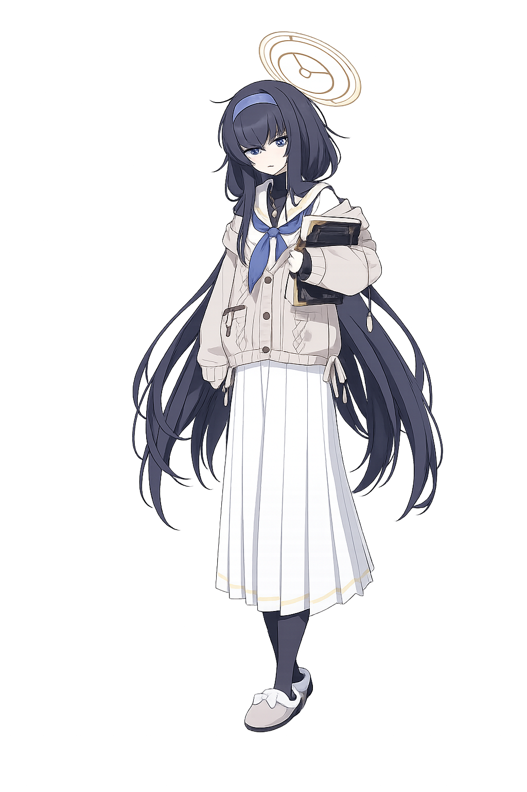

UI
Trinity General School
3rd Year
Library Committee
“Please,
keep it down...”

Trinity Library Committee's Director.
A quiet student who loves books and spends most of her time in the old library, taking care of ancient texts and historical records.